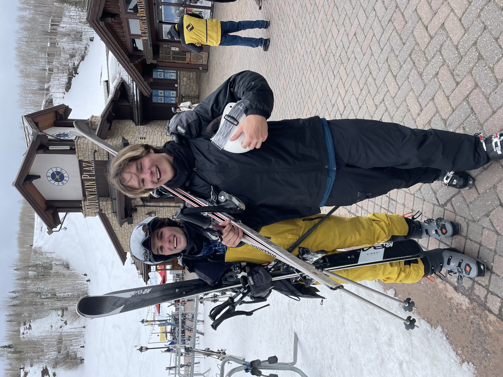
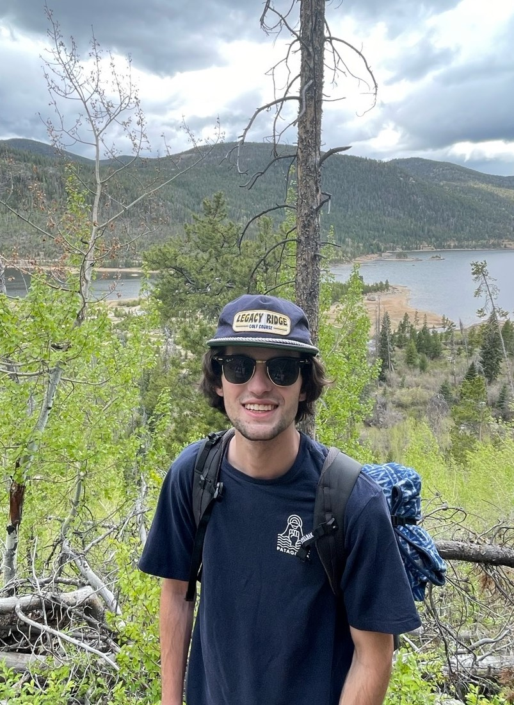

Skiing
Skiing has slowly become one of my favorite hobbies and will always remain as the thing that got me interested in Colorado. I've been on the mountian since I was 8 years old and I hope to do it for the rest of my life!

Boating
During the COVID-19 lockdowns, I found a small aluminum boat on Craigslist and decided to spend my freetime in the summer fixing it up. It ended up being a very fun restoration project and in the end I wound up with an awesome little boat that remains with my parents in Connecticut.

Hiking
Since coming to Colorado I've tried to get outdoors and take advantage of the beautiful scenery while I'm out here. For me, this has turned into a love of hiking and it's even got me to try my legs at climbing.